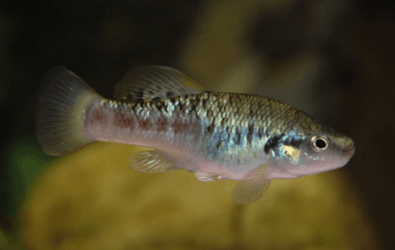

Systématique
- Ordre : Cyprinodontiformes
- Famille : Goodeidae
- Genre : Allodontichthys
- Espèce : A. polylepis
- Auteur : Rauchenberger, 1988

Allodontichthys polylepis est un petit goodeidé benthique endémique du Mexique. Son nom d'espèce, polylepis, fait référence au nombre élevé d'écailles le long de sa ligne latérale comparativement aux autres membres du genre. Il présente une forme hydrodynamique, comprimée verticalement à l'avant pour mieux résister au courant. Sa robe est constituée de tons ocres et bruns, avec des marbrures irrégulières assurant un excellent camouflage sur les fonds rocheux.
La taille moyenne se situe entre 5 et 6 cm pour les mâles, les femelles pouvant atteindre 7 cm. C'est un poisson discret dont la morphologie rappelle celle des petits poissons de fond de courants rapides mondiaux, avec des nageoires pectorales larges servant d'appui sur le substrat.
Comme ses congénères, Allodontichthys polylepis est une espèce benthique inféodée aux zones de "riffles" (rapides). Son comportement est territorial ; chaque individu, mâle comme femelle, occupe souvent un poste précis sous ou entre les pierres. Les interactions intra-spécifiques sont fréquentes mais rarement violentes dans un espace adapté.
Il nécessite une eau d'une pureté irréprochable et un taux d'oxygène dissous proche de la saturation. En aquarium, il passe le plus clair de son temps posé sur le décor ou le sable, scrutant le passage de proies potentielles. Il est particulièrement sensible aux hausses de température qui font chuter le taux d'oxygène.
Mode : Vivipare matrotrophe.
La reproduction suit le cycle biologique des Goodeinae. Après une fécondation interne, la gestation s'étale sur environ 55 à 65 jours. Les embryons développent des trophotaeniae pour absorber les nutriments maternels.
Les portées sont très réduites (souvent entre 5 et 15 alevins), mais les jeunes naissent à une taille très avancée, atteignant parfois 15 mm. Ils sont immédiatement capables de résister à un courant modéré et de se nourrir de micro-invertébrés. Le cannibalisme est peu fréquent chez cette espèce benthique si le nourrissage est régulier.
Dimorphisme sexuel : Le mâle se reconnaît à son andropode (encoche au niveau des premiers rayons de la nageoire anale). Il est généralement plus svelte et peut présenter des contrastes de couleurs légèrement plus marqués sur les flancs. La femelle est plus corpulente, surtout lorsqu'elle est gravide.
Espérance de vie : Environ 3 à 4 ans en captivité.
L'espèce possède une aire de répartition extrêmement restreinte dans le bassin du Rio Ameca, au Jalisco (Mexique). Elle fréquente exclusivement les zones de courants rapides (riffles) sur substrat de galets, de graviers et de roches volcaniques.
Le milieu naturel est caractérisé par une absence quasi totale de plantes aquatiques, l'essentiel de la production primaire venant du périphyton sur les pierres. Malheureusement, le bassin du Rio Ameca subit une pollution industrielle et urbaine majeure, ainsi que des prélèvements d'eau pour l'irrigation, plaçant l'espèce dans une situation critique.
Répartition

Origine naturelle :
- Mexique : Endémique du bassin supérieur du Rio Ameca (État de Jalisco).
- Localité type : Rio Potrero Grande, Jalisco, Mexique.
Statut UICN : En danger critique (Critically Endangered). Elle a disparu de plusieurs localités ces dernières années. C'est l'un des Goodeids les plus proches de l'extinction totale.
Paramètres de maintenance
Température : 18 à 23 °C (Une oxygénation maximale est obligatoire).
pH : 7,0 à 8,0.
GH : 8 à 18 °dGH.
Courant : Très fort (pompe de brassage indispensable).
Volume conseillé : Minimum 80 L pour un groupe, avec un aménagement de type "rivière" (galets, roches).
Régime alimentaire
Régime : Carnivore benthique.
Il se nourrit principalement de larves d'insectes, de petits crustacés et de vers vivant entre les pierres. En aquarium, il privilégie les proies vivantes ou congelées (vers de vase, artémias, cyclops). L'accoutumance aux nourritures sèches est possible mais lente et ne doit pas constituer l'unique source alimentaire.